Chapter 4: Logic Synthesis & Design for Test¶
Synthesis is where your RTL becomes real hardware: a netlist of standard cells from the foundry's library, optimised to meet timing, power and area goals described in SDC constraints. This chapter explains how synthesis works, what Liberty libraries and PVT corners are, how to write timing constraints, how static timing analysis judges them and how synthesis cuts power. It then covers Design for Test (DFT): scan chains, ATPG, compression, BIST, JTAG and the test standards that let every manufactured chip be checked in seconds.
4.1 How Logic Synthesis Works¶
Logic synthesis turns RTL into a gate-level netlist. It happens in three main steps: translation (reading RTL into generic logic), optimisation (simplifying and restructuring logic for speed, area and power), and technology mapping (choosing real cells from the foundry library). The tool constantly checks timing against your constraints and tries alternatives until goals are met.
Think of it like…
Synthesis is like a translator turning a story into another language, then an editor tightening the prose, then a typesetter fitting it to the exact page size and font available.
Real-world example
Nadia synthesises a 64-bit multiplier for 1.5 GHz. The tool first builds a generic multiplier, then chooses a Booth-encoded Wallace-tree architecture because a simple array is too slow. It maps logic to the library's fastest cells on critical paths and small high-Vt cells elsewhere. The report shows 0 ps negative slack, 48,000 µm² area and 12 mW at the typical corner.
How it works¶
- Read RTL, libraries and constraints (SDC, UPF).
- Elaborate: build generic logic and infer registers, adders, multiplexers and memories.
- Optimise: constant propagation, logic sharing, restructuring, resource selection.
- Map to standard cells, size gates, insert buffers and clock gating.
- Report timing, area and power; write the netlist, SDC and guidance files for the next steps.
Who uses it
Synthesis engineers, RTL designers checking PPA, and physical design engineers in integrated flows.
Key takeaway
Garbage in, garbage out: synthesis results are only as good as the RTL quality and the constraints you give it.
Going deeper
- Translation produces a technology-independent network (for example Synopsys GTECH generic cells, or and-inverter graphs in ABC) that can be optimised before real cell delays are known.
- Arithmetic operators are recognised as whole units and given architectures to suit timing, such as ripple or prefix adders and Booth-encoded multipliers.
- Optimisation is constraint-driven: failing paths get faster, larger cells and restructuring, while paths with spare slack are downsized to save area and leakage.
- Keeping hierarchy eases debug and equivalence checking, but ungrouping enables cross-boundary optimisation; tools often auto-ungroup small modules.
- Logic with no observable effect, such as unloaded flops, is removed; surprising removals usually reveal RTL bugs like unconnected outputs.
- Flows run an initial compile, then incremental optimisation after DFT insertion or constraint updates to fix remaining violations without starting again.
Common mistakes & misconceptions
- Expecting synthesis to fix a poor architecture; a long arithmetic chain needs pipelining or restructuring in the RTL.
- Ignoring warnings about inferred latches, multiple drivers or removed registers; these often reveal real RTL bugs.
- Over-using dont_touch, which blocks optimisation and can leave violations the tool could otherwise fix.
Key concepts, tools, formats, standards & companies¶
| Name | What it does | Example |
|---|---|---|
| Logic synthesis EDA technique · Methodology · Synthesis |
Automatic conversion of RTL into an optimised netlist of standard cells. | A 50,000-line RTL design becomes a 20-million-cell netlist in a few hours. |
| Elaboration Synthesis step · Concept · Synthesis |
Building the full design hierarchy, resolving parameters and generate blocks. | A FIFO with DEPTH=16 is elaborated into exactly 16 storage rows. |
| Technology mapping Synthesis step · Concept · Synthesis |
Choosing actual library cells to implement the generic logic. | Generic AND-OR logic is mapped to an AOI22_X2 cell. |
| Logic optimisation Synthesis step · Concept · Synthesis |
Restructuring Boolean logic to reduce delay, area or power while preserving function. | Common sub-expressions shared between two adders are computed once. |
| Gate sizing and buffering Synthesis/P&R optimisation · Concept · Synthesis |
Selecting cell drive strengths and inserting buffers to meet timing and fix slow transitions. | Upsizing a NAND from X1 to X4 speeds a critical path by 20 ps. |
| Retiming Synthesis optimisation · Concept · Synthesis |
Moving registers across logic to balance pipeline stages without changing function. | Retiming shifts half a multiplier's logic into the next pipeline stage. |
| Datapath synthesis / DesignWare Synopsys DesignWare Library; Cadence ChipWare · IP · Synthesis · Commercial |
Optimised arithmetic architectures (adders, multipliers, dividers) chosen automatically by synthesis. | Synthesis picks a fast parallel-prefix adder from DesignWare for a critical path. |
| Multi-bit flip-flop banking Low-power synthesis technique · Concept · Synthesis |
Merging several single-bit flops into multi-bit cells that share clock circuitry. | Banking 4-bit flops cuts clock power by around 10-20 % in a register-heavy block. |
| Don't-touch and dont_use Synthesis directives · Concept · Synthesis |
Directives telling the tool not to modify certain instances or not to use certain cells. | Clock-domain synchroniser flops are marked dont_touch so they are not optimised away. |
| QoR (Quality of Results) Industry term · Concept · Synthesis |
Summary of how good a synthesis or implementation run is: timing, area, power and congestion. | A tool upgrade improves QoR by 3 % area at the same timing. |
| Resource sharing Synthesis optimisation · Concept · Synthesis |
Using one hardware operator for several RTL operations that never happen in the same cycle, saving area. | Two additions in different branches of a case statement share one adder plus a multiplexer. |
| Ungrouping and boundary optimisation Synthesis option · Concept · Synthesis |
Flattening module hierarchy, or optimising across module ports, so logic split between modules can be simplified together. | Ungrouping a small decoder lets the tool merge its logic with the FSM, removing two levels of gates. |
| Constant propagation and dead-logic removal Synthesis optimisation · Concept · Synthesis |
Pushing tied-off values through the logic and deleting anything that cannot affect an output. | A parameter disables the debug port, so 1,200 flops and their logic vanish from the netlist automatically. |
| FSM extraction and re-encoding Synthesis optimisation · Concept · Synthesis |
Recognising state machines in RTL and choosing a better state encoding, such as one-hot, for speed or area. | A 12-state binary FSM is re-encoded one-hot, trading 8 extra flops for a faster next-state decode. |
4.2 Synthesis Tools: Design Compiler, Fusion Compiler, Genus, Yosys and ABC¶
Commercial ASIC synthesis is dominated by Synopsys (Design Compiler and Fusion Compiler) and Cadence (Genus). Modern tools are 'physically aware': they consider where cells will be placed so their timing estimates match layout. In open source, Yosys reads Verilog and uses the ABC engine from UC Berkeley for logic optimisation and mapping.
Three synthesis flows side by side
| Synopsys DC / Fusion | Cadence Genus | Yosys + ABC | |
|---|---|---|---|
| Read RTL | analyze, elaborate | read_hdl, elaborate | read_verilog -sv |
| Main command | compile_ultra / compile_fusion | syn_generic, syn_map, syn_opt | synth, dfflibmap, abc |
| Physical awareness | Topographical / native in FC | iSpatial with Innovus | None (OpenROAD later) |
| Typical outputs | Netlist, SDC, SVF | Netlist, SDC, LEC dofile | Netlist, stat report |
| Licence | Commercial | Commercial | Open source (ISC) |
Commands differ, but every flow reads RTL and constraints and writes a netlist plus reports.
Think of it like…
Choosing a synthesis tool is like choosing a professional kitchen: the big brands have every gadget and support, while the open-source kitchen is free and great for learning, though less turbo-charged.
Real-world example
At a large company, Vikram runs Fusion Compiler, which uses the same engines for synthesis and place-and-route so timing correlates closely. At a start-up with Cadence licences, his friend uses Genus with iSpatial to predict placement. At home, Vikram synthesises his RISC-V hobby core with Yosys for SKY130 and compares the area reports.
How it works¶
- Set up the library paths, target libraries and design files.
- Read RTL and constraints; elaborate the top module.
- Compile/synthesise with chosen effort and physical awareness (floorplan or DEF).
- Check reports: timing (QoR), area, power, design rule violations, unmapped cells.
- Write outputs: netlist, SDC, UPF, and guidance for LEC.
Who uses it
Synthesis/implementation engineers; RTL designers running quick PPA checks.
Key takeaway
Know the basic command flow of one commercial tool (read, elaborate, link, compile, report_timing, write) and Yosys's 'synth' command.
Going deeper
- A typical commercial script sets libraries, reads and elaborates RTL, links, reads SDC and UPF, runs check_design and check_timing, compiles, inserts DFT, re-optimises incrementally and writes netlist, constraints, reports and LEC guidance.
- Physical-aware synthesis reads the floorplan (DEF) and technology LEF so wire delays and congestion reflect real layout, reducing surprises at place-and-route.
- Fusion Compiler shares one data model between synthesis and implementation, while Genus links to Innovus through iSpatial; both aim to keep timing correlated across steps.
- Yosys's synth command runs a generic script (proc, opt, fsm, memory, techmap, abc); for ASICs, flops are mapped with dfflibmap and logic with abc against a Liberty file, as in LibreLane.
- Reports to read on every run: worst paths per clock group, area by hierarchy, cell and Vt usage, power, design-rule violations and messages about latches or removed logic.
Common mistakes & misconceptions
- Skipping check_design and check_timing; unresolved references and unconstrained endpoints produce a netlist that looks fine but is not.
- Comparing QoR between tools without identical libraries, constraints and corners; most differences then come from setup, not the tool.
- Forgetting timing models for memories and analogue macros, so synthesis sees no timing on their paths.
Try it: Synthesise a design with Yosys¶
yosys -p "read_verilog -sv counter.sv; synth -top counter; \
dfflibmap -liberty sky130_fd_sc_hd__tt_025C_1v80.lib; \
abc -liberty sky130_fd_sc_hd__tt_025C_1v80.lib; \
stat; write_verilog -noattr counter_netlist.v"
Key concepts, tools, formats, standards & companies¶
| Name | What it does | Example |
|---|---|---|
| Synopsys Design Compiler (DC NXT) Synopsys · Tool · Synthesis · Commercial |
Long-standing industry-standard RTL synthesis tool, with topographical/physical-aware modes. | Generations of engineers learned synthesis with 'compile_ultra' in Design Compiler. |
| Synopsys Fusion Compiler Synopsys · Tool · Synthesis · Commercial |
Synopsys RTL-to-GDSII tool whose synthesis step shares one database and engines with placement, so synthesis timing reflects real layout. | A team synthesises with compile_fusion and continues straight into placement in the same database, avoiding a netlist hand-off. |
| Cadence Genus Synthesis Solution Cadence Design Systems · Tool · Synthesis · Commercial |
Cadence's RTL synthesis tool with iSpatial technology linking to Innovus placement. | Genus iSpatial predicts wire delays using Innovus's placer for better correlation. |
| Siemens Oasys-RTL Siemens EDA · Tool · Synthesis · Commercial |
Physically aware RTL synthesis and floorplanning tool for early PPA exploration. | Architects use Oasys-RTL to check whether a block will route before full implementation. |
| Yosys YosysHQ · Tool · Synthesis · Open source |
Open-source synthesis framework: reads Verilog, runs optimisation passes and maps to a Liberty cell library or FPGA primitives via scripted commands. | 'synth -top counter', then 'dfflibmap' and 'abc' with a SKY130 Liberty file, turn RTL into gates; 'stat' reports cell count and area. |
| ABC UC Berkeley (Alan Mishchenko) · Tool · Synthesis · Open source |
Logic optimisation and technology-mapping engine using and-inverter graphs, used inside Yosys. | Yosys's abc pass maps optimised logic onto Liberty cells. |
| Physical-aware synthesis EDA technique · Methodology · Synthesis |
Synthesis that uses floorplan and placement estimates so wire delays are realistic. | Using the floorplan DEF in synthesis avoids surprises when the design is placed. |
| Wire-load model (WLM) Liberty / legacy synthesis · Concept · Synthesis |
Old statistical estimate of wire capacitance by fan-out, inaccurate at modern nodes. | Modern flows replace wire-load models with physical-aware synthesis. |
| Tcl John Ousterhout (1988) · Language · Whole flow · Open source |
Scripting language used to drive almost every EDA tool. | A synthesis script is a Tcl file with commands like read_verilog and report_timing. |
| Synthesis reports Tool output · Concept · Synthesis |
Text reports of timing, area, power, cell usage and constraint violations. | report_qor shows WNS, TNS and the number of violating paths per clock group. |
| check_design and check_timing Synthesis/STA commands · Concept · Synthesis |
Sanity checks reporting unresolved modules, floating pins, multiple drivers, unclocked flops and unconstrained endpoints. | check_timing lists 40 unconstrained outputs, revealing a missing set_output_delay before anyone trusts the timing report. |
| Synthesis hand-off files Flow practice · Concept · Synthesis |
The outputs passed downstream: gate netlist, updated SDC, updated UPF, LEC guidance (SVF/dofile), scan definition and reports. | The synthesis release folder contains top.v, top.sdc, top.upf, top.svf and top.scandef for the P&R team. |
| SystemVerilog front ends for Yosys (yosys-slang, Synlig) Open-source plugins (yosys-slang; Synlig by CHIPS Alliance) · Tool · Synthesis · Open source |
Plugins that give Yosys much fuller SystemVerilog parsing than its built-in Verilog reader. | Loading the slang plugin lets Yosys read a design using packages, interfaces and structs without rewriting it. |
4.3 Standard-Cell Libraries and Liberty (.lib) Files¶
A standard-cell library is the foundry's or IP vendor's catalogue of logic cells (inverters, NANDs, flops, buffers...) all with the same height so they line up in rows. Each cell comes with several 'views': a Liberty (.lib) file describing timing, power and function; a LEF file describing its physical outline; a Verilog model; and the GDS layout. Synthesis and timing tools rely on the Liberty data.
Think of it like…
A standard-cell library is like a LEGO catalogue: every brick has the same height, a known shape, and a data sheet saying how strong and heavy it is.
Real-world example
Kenji opens sky130_fd_sc_hd__tt_025C_1v80.lib and finds the entry for nand2_1. It lists its area, its function '!(A&B)', input pin capacitances, and tables giving delay and output transition for combinations of input slew and output load. When his synthesis run picks nand2_4 instead, it is because the table shows it is faster at the heavy load on that net.
How it works¶
- Cells are designed at transistor level and laid out with a fixed height (track count).
- Characterisation simulates each cell with SPICE across slews, loads and PVT corners.
- Results are written as Liberty tables (NLDM, CCS or ECSM, plus LVF for variation).
- Synthesis and STA look up delays by interpolating these tables.
- Libraries come in variants: Vt flavours, track heights, and different corners.
Who uses it
Library/characterisation engineers create them; synthesis, P&R and STA engineers use them daily.
Key takeaway
Know what NLDM tables contain (delay and transition vs input slew and output load) and why each PVT corner needs its own .lib file.
Going deeper
- A Liberty file has a library header (units, nominal PVT, slew thresholds), lookup-table templates, then one cell group per cell with pins, functions and timing/power arcs.
- NLDM tables are commonly 7×7 or 8×8, indexed by input transition and output load; tools interpolate inside and extrapolate outside, losing accuracy at the edges.
- Every corner needs its own .lib, so a library release can contain dozens to hundreds of files across process, voltage, temperature and Vt flavours.
- Libraries come in threshold-voltage flavours (such as ULVT, LVT, SVT, HVT) so synthesis can trade speed for leakage path by path.
- LVF adds sigma tables for delay, transition and constraints; generating them needs Monte Carlo-based characterisation, which is why it is costly.
- Characterisation tools run SPICE on every cell, arc, slew, load and corner, so one advanced-node library release consumes very large amounts of compute.
Common mistakes & misconceptions
- Mixing libraries from different corners or release versions in one run, giving meaningless timing.
- Ignoring extrapolation warnings when slews or loads exceed table ranges; fix the transitions in the design instead.
- Assuming the typical (TT) library is enough; timing must close at every required sign-off corner.
Try it: Part of a Liberty cell description (simplified)¶
cell (NAND2_X1) {
area : 0.798;
pin (A) { direction : input; capacitance : 0.0016; }
pin (Y) {
direction : output;
function : "!(A & B)";
timing () {
related_pin : "A";
cell_rise (delay_template_7x7) { values ("..."); }
}
}
}
Key concepts, tools, formats, standards & companies¶
| Name | What it does | Example |
|---|---|---|
| Standard cell Foundation IP · Concept · Synthesis |
A pre-designed logic gate or flop with fixed height, designed to tile in rows. | A library may offer 800-2,000 cells in several drive strengths and Vt flavours. |
| Liberty (.lib) Synopsys (open Liberty format) · File format · Synthesis |
Text format describing each cell's function, timing, power and noise at one PVT corner. | Synthesis reads ss_0p72v_125c.lib for slow-corner setup analysis. |
| NLDM (Non-Linear Delay Model) Liberty timing model · Concept · Synthesis |
Lookup tables of delay and output slew indexed by input slew and output load. | The tool interpolates between table entries at 15 ps slew and 4 fF load. |
| CCS and ECSM current-source models Synopsys (CCS), Cadence (ECSM) · Concept · Signoff |
More accurate models storing output current waveforms instead of simple delays. | Advanced-node signoff uses CCS models for better accuracy on long wires. |
| LVF (Liberty Variation Format) Liberty Technical Advisory Board · File format · Signoff |
Liberty extension that adds statistical sigma tables per timing arc, created during library characterisation for variation-aware timing. | The 3 nm library release includes LVF tables, so each cell carries its own local-variation data instead of one flat derate. |
| Library characterisation Cadence Liberate, Synopsys PrimeLib, Siemens Solido · Methodology · Synthesis · Commercial |
Running many SPICE simulations of each cell to generate Liberty data. | Characterising a full library across 30 corners uses thousands of CPU-hours. |
| Track height (7.5T, 9T, 12T...) Library architecture · Concept · Physical Design |
Cell height measured in routing tracks; shorter cells are denser, taller ones faster. | A mobile chip uses dense 6T cells; a high-speed block uses taller cells. |
| Special cells (tie, filler, tap, decap, endcap) Standard-cell libraries · Concept · Physical Design |
Non-logic cells for constant values, gap filling, well taps, decoupling and row ends. | Decap cells are added in empty space to stabilise the supply voltage. |
| Foundation IP vendors Foundries (TSMC, GF, Samsung), Synopsys, Cadence, others · Company · Synthesis · Commercial |
Suppliers of standard-cell libraries, memory compilers and I/O libraries. | A team chooses between the foundry's own library and a third-party high-performance one. |
| SKY130 / GF180 open standard-cell libraries SkyWater & Google; GlobalFoundries & Google · IP · Synthesis · Open source |
Freely available standard-cell libraries with Liberty, LEF, GDS and Verilog views. | sky130_fd_sc_hd is the high-density library used by most open-source designs. |
| Timing arc Liberty · Concept · Synthesis |
A pin-to-pin delay or check relationship in a cell, such as A to Y propagation or D-to-CLK setup. | A NAND2 has two arcs, A→Y and B→Y, each with separate rise and fall delay tables. |
| Setup and hold constraint tables Liberty · Concept · Synthesis |
Tables giving a flop's required setup and hold times as functions of data and clock transition times. | With a slow 120 ps clock edge, the library says the flop needs 35 ps setup instead of 22 ps. |
| Internal and leakage power tables Liberty · Concept · Synthesis |
Liberty data giving energy per transition (internal_power) and static leakage per input state, used for power analysis. | Power tools multiply each cell's internal energy by its toggle rate and add leakage from the library. |
| Compiled library (.db) Synopsys Library Compiler · File format · Synthesis |
Binary version of a Liberty file that Synopsys tools load; Cadence and open-source tools usually read the .lib text. | The PDK ships both sc_ss_0p72v_125c.lib and the compiled sc_ss_0p72v_125c.db for Design Compiler. |
4.4 PVT Corners, Modes and MCMM¶
Transistor speed changes with Process (manufacturing variation), Voltage and Temperature: the PVT corners. A chip must work at every combination it may meet, from a slow chip at low voltage and high temperature to a fast chip at high voltage and low temperature. It must also work in every operating mode (functional, test, sleep). Tools analyse many corners and modes at once: MCMM.
Classic slow and fast corners
| Slow corner | Fast corner | |
|---|---|---|
| Process | SS (slow NMOS/PMOS) | FF (fast NMOS/PMOS) |
| Voltage | Nominal −10 % | Nominal +10 % |
| Temperature | 125 °C (or −40 °C if inverted) | −40 °C (125 °C for leakage) |
| Wire RC | Cworst / RCworst | Cbest / RCbest |
| Main check | Setup | Hold |
| Leakage | Low | Highest when hot |
Setup usually fails at the slow corner and hold at the fast one, with exceptions at advanced nodes.
Think of it like…
Like a car that must start on a freezing morning in Finland and not overheat in a desert summer, with either a new or a worn engine.
Real-world example
For an automotive chip rated from -40 °C to 150 °C, Ingrid's team checks setup at the slow-slow corner, 0.72 V, 150 °C, and hold at fast-fast, 0.88 V, -40 °C. They also check 'temperature inversion', where at advanced nodes low temperature can actually be slower. With 3 modes and 12 corners, they analyse 36 scenarios in one MCMM run.
How it works¶
- Process corners: SS, TT, FF, plus skewed SF and FS (NMOS/PMOS different).
- Voltage: nominal and minus/plus tolerance (e.g. 0.8 V ± 10 %).
- Temperature: e.g. -40 °C to 125 °C (consumer) or 150 °C (automotive).
- Combine with RC (wire) corners: Cworst, Cbest, RCworst, RCbest, typical.
- Analyse all relevant mode-corner scenarios simultaneously (MCMM).
Who uses it
Synthesis, P&R and STA engineers; library teams; foundry and product engineers define corners.
Key takeaway
Setup is usually worst at slow corners; hold is usually worst at fast corners, but advanced nodes add exceptions like temperature inversion.
Going deeper
- A scenario combines one mode with one corner (process, voltage, temperature, RC); advanced SoCs analyse dozens across functional, test and low-power modes.
- Corner voltages are typically nominal ±5–10 % to cover regulator tolerance and IR drop; temperatures span −40 °C to 125 °C for automotive and industrial parts.
- Global variation is covered by corners, local variation by OCV derates or statistical models such as POCV with LVF data.
- Wire corners matter as much as transistor corners at advanced nodes: Cworst stresses capacitance-dominated paths, RCworst stresses long resistive wires.
- Temperature inversion at low voltage means the worst setup corner can be cold, so both hot and cold slow corners are checked.
- Adding corners progressively—few during early optimisation, the full list at sign-off—keeps run times practical.
Common mistakes & misconceptions
- Closing setup only at the slow-hot corner and hold only at the fast corner, missing temperature-inversion and RC-corner exceptions.
- Forgetting test mode as its own mode; scan shift and capture use different clocks and paths needing their own constraints.
- Loading every scenario from the start of optimisation, slowing runs without improving results.
Key concepts, tools, formats, standards & companies¶
| Name | What it does | Example |
|---|---|---|
| PVT (Process, Voltage, Temperature) Industry term · Concept · Signoff |
The three variables that change transistor speed and must be covered by analysis. | A corner named ssg_0p72v_m40c means slow process, 0.72 V, -40 °C. |
| Process corners (SS, TT, FF, SF, FS) Foundry models · Concept · Signoff |
Statistical extremes of NMOS and PMOS speed from manufacturing variation. | SF means slow NMOS and fast PMOS, which stresses some flop designs. |
| RC corners (Cworst, RCworst, Cbest...) Foundry extraction decks · Concept · Signoff |
Variation of wire resistance and capacitance due to metal thickness and width variation. | Long wires are slowest at RCworst; short local paths at Cworst. |
| Operating modes Design practice · Concept · Synthesis |
Different functional configurations with different clocks and constraints. | Mission mode, scan shift, scan capture and low-power sleep each have their own SDC. |
| MCMM (Multi-Corner Multi-Mode) EDA technique · Methodology · Physical Design |
Optimising and analysing all relevant mode/corner scenarios at the same time. | P&R fixes setup in 4 scenarios and hold in 6 scenarios concurrently. |
| Temperature inversion Device physics at low voltage / advanced nodes · Concept · Signoff |
At low supply voltages, transistors can get slower when colder, flipping the usual worst case. | A 5 nm chip's worst setup corner is -40 °C, not 125 °C. |
| Voltage drop margin Signoff practice · Concept · Signoff |
Extra voltage reduction assumed in timing to cover IR drop on the power grid. | The team analyses timing at 0.8 V minus 5 % to cover expected IR drop. |
| Aging corners Reliability practice · Concept · Signoff |
Libraries modelling transistors slowed by years of use (BTI, HCI). | An automotive chip is timed with end-of-life 10-year aged libraries. |
| Signoff corner list Foundry and company methodology · Concept · Signoff |
The agreed set of scenarios that must pass before tapeout. | The foundry's signoff guide mandates 8 corners for N5 consumer designs. |
| Scenario (mode + corner) MCMM term · Concept · Synthesis |
One combination of an operating mode and a PVT/RC corner that the tools analyse and optimise. | 'func_ss_0p72v_125c_rcworst' and 'scan_ff_0p88v_m40c_cbest' are two of 24 scenarios in the flow. |
| Global vs local variation Variation modelling · Concept · Signoff |
Global variation shifts a whole chip and is covered by corners; local variation differs transistor to transistor and needs derates or statistics. | Corners handle a whole wafer being slow; OCV or POCV handles two neighbouring flops behaving differently. |
| Dominant scenario pruning EDA technique · Methodology · Physical Design |
Identifying the few scenarios that cause most violations and optimising those, while checking all scenarios at sign-off. | Analysis shows 6 of 24 scenarios capture every violation, so placement optimises only those six. |
| Corner naming Foundry and company convention · Concept · Signoff |
Corner names encode process, voltage, temperature and RC, so files and reports are unambiguous. | 'ss_0p72v_125c' reads as slow-slow process, 0.72 V, 125 °C; 'ff_0p88v_m40c' is fast-fast at −40 °C. |
4.5 Timing Constraints with SDC¶
SDC (Synopsys Design Constraints) is the Tcl-based language you use to tell tools your timing goals: the clocks and their frequencies, when inputs arrive and outputs are needed, and which paths are exceptions. Synthesis, place-and-route and STA all read the same SDC. Wrong constraints are a major cause of chip failures, because tools optimise exactly what you tell them.

Think of it like…
SDC is the timetable for a railway: it says when each train leaves, when it must arrive, and which lines are not used for passenger trains at all.
Real-world example
Marco writes SDC for a 500 MHz block: create_clock -period 2.0 on clk, input delays of 0.6 ns for signals coming from another block, output delay of 0.8 ns, a false path on a static configuration register, and a 2-cycle multicycle path on a slow divider. When a colleague forgot to declare a generated clock from a divider, half the design was unconstrained and STA showed false 'clean' results.
How it works¶
- Define clocks: create_clock and create_generated_clock with periods and sources.
- Add clock uncertainty (jitter + margin), latency and transition targets.
- Constrain I/O: set_input_delay and set_output_delay relative to clocks.
- Declare exceptions: set_false_path, set_multicycle_path, set_max_delay, clock groups.
- Add design rules (max transition, capacitance, fanout) and check for unconstrained paths.
Who uses it
RTL designers write initial constraints; synthesis, PD and STA engineers refine and sign them off.
Key takeaway
Every exception (false path, multicycle) must be justified and reviewed: a wrong false path hides real failures.
Going deeper
- Setup check: data must arrive before the capture edge minus setup time and uncertainty; hold check: data must not change until hold time after the edge that launched it.
- I/O delays describe the outside world: with a 2 ns period and 0.6 ns input delay, the internal input path gets about 1.4 ns minus setup and uncertainty.
- Before CTS clocks are ideal and uncertainty covers expected skew; after CTS set_propagated_clock uses real tree delays and uncertainty is reduced to jitter and margin.
- A setup multicycle of N normally needs a hold multicycle of N−1 to move the hold check back to the launch edge.
- set_clock_groups -asynchronous stops timing between unrelated clocks, so those crossings must be made safe by CDC design and checked with CDC tools.
- Projects keep separate SDC sets per mode, such as functional, scan shift and scan capture, all checked by constraint-verification tools.
Common mistakes & misconceptions
- Using false paths to hide failing paths instead of fixing them; a wrong exception becomes a silicon bug.
- Adding a setup multicycle without the matching hold multicycle, creating huge false hold violations.
- Missing generated clocks on dividers or muxes, leaving derived-clock paths untimed or wrongly timed.
- Leaving inputs or outputs unconstrained; check_timing reports them and they will not be optimised.
Try it: A fuller SDC example¶
# Clocks
create_clock -name clk -period 2.0 [get_ports clk]
create_clock -name usb_clk -period 16.667 [get_ports usb_clk]
create_generated_clock -name clk_div2 -source [get_ports clk] \
-divide_by 2 [get_pins u_div/q_reg/Q]
set_clock_uncertainty -setup 0.10 [get_clocks clk]
set_clock_uncertainty -hold 0.03 [get_clocks clk]
# I/O budget and environment
set_input_delay 0.6 -clock clk [remove_from_collection [all_inputs] [get_ports {clk usb_clk}]]
set_output_delay 0.8 -clock clk [all_outputs]
set_driving_cell -lib_cell BUF_X4 [all_inputs]
set_load 0.02 [all_outputs]
# Mode selection and exceptions (review each one!)
set_case_analysis 0 [get_ports scan_mode]
set_false_path -from [get_cells cfg_reg*]
set_multicycle_path 2 -setup -to [get_pins u_mac/acc_reg*/D]
set_multicycle_path 1 -hold -to [get_pins u_mac/acc_reg*/D]
set_clock_groups -asynchronous -group {clk clk_div2} -group usb_clk
# Design rules
set_max_transition 0.15 [current_design]
Key concepts, tools, formats, standards & companies¶
| Name | What it does | Example |
|---|---|---|
| SDC (Synopsys Design Constraints) Synopsys (openly licensed format) · File format · Synthesis |
Tcl-based format describing clocks, I/O timing and exceptions, read by nearly all tools. | The same top.sdc file is used by Genus, Innovus and Tempus. |
| create_clock / create_generated_clock SDC commands · Concept · Synthesis |
Define primary clocks and clocks derived from them (dividers, muxes). | A divide-by-2 clock is declared as a generated clock with -divide_by 2. |
| set_input_delay / set_output_delay SDC commands · Concept · Synthesis |
Tell tools how much of the clock period is used outside the block on I/O paths. | Input delay 0.6 ns at 2 ns period leaves 1.4 ns for internal logic. |
| False path SDC exception · Concept · Synthesis |
A path that exists structurally but never needs to meet timing in real operation. | A test-mode-only mux path is set as false in functional mode. |
| Multicycle path SDC exception · Concept · Synthesis |
A path allowed more than one clock cycle because data is only sampled every N cycles. | A divider that produces results every 4 cycles gets a 4-cycle setup multicycle. |
| Clock groups (asynchronous / exclusive) SDC command set_clock_groups · Concept · Synthesis |
Tells tools which clocks are unrelated or never active together, so their crossings are not timed. | CPU clock and USB clock are declared asynchronous; CDC tools check those crossings instead. |
| Clock uncertainty SDC · Concept · Synthesis |
Margin subtracted from the period to cover jitter, skew estimates and safety. | Pre-CTS uncertainty is larger because the clock tree does not exist yet. |
| Design rule constraints (max_transition, max_capacitance, max_fanout) SDC / Liberty · Concept · Synthesis |
Electrical limits that keep signals sharp and cells within characterised ranges. | A net with 300 ps transition violates a 150 ps limit and gets buffered. |
| Constraint verification tools Synopsys Timing Constraints Manager, Siemens (Excellicon), Real Intent, others · Tool · Synthesis · Commercial |
Tools that check, generate and promote SDC to catch missing or wrong constraints. | A checker reports 120 unclocked registers before synthesis starts. |
| Unconstrained path STA term · Concept · Signoff |
A path with no timing requirement because constraints are missing; it will not be optimised or checked. | check_timing warns that 2,000 endpoints have no clock. |
| set_case_analysis SDC command · Concept · Synthesis |
Fixes a pin or port to a constant for timing analysis, selecting one mode and removing irrelevant paths. | set_case_analysis 0 [get_ports scan_mode] times only functional paths through the scan muxes. |
| Environment constraints (set_driving_cell, set_load) SDC commands · Concept · Synthesis |
Describe what drives each input and what load each output sees, so boundary transitions and delays are realistic. | Inputs are driven by a BUF_X4 and outputs see 20 fF, matching the neighbouring block's real cells. |
| Ideal vs propagated clocks SDC (set_propagated_clock, set_clock_latency) · Concept · Synthesis |
Before clock-tree synthesis clocks are ideal with estimated latency; afterwards tools use real propagated clock-tree delays. | Synthesis assumes 0.4 ns ideal latency; after CTS, set_propagated_clock replaces it with each flop's actual arrival. |
4.6 Static Timing Analysis (STA) Fundamentals¶
Static timing analysis checks every timing path in the design mathematically, without running test vectors. It adds up cell and wire delays along each path from a launching flop to a capturing flop and compares the arrival time with the required time set by the clock. Because it checks all paths exhaustively in minutes to hours, STA is the standard way to sign off timing.

Think of it like…
STA is like checking every possible route on a map against a timetable, instead of sending a car down each road to see if it arrives in time.
Real-world example
Sana's STA report shows path: clock launch 0 ps, clock latency 220 ps, flop clk-to-Q 45 ps, 14 cells and wires 1,610 ps = arrival 1,875 ps. Required: next edge 2,000 ps + capture latency 205 ps - setup 30 ps - uncertainty 60 ps = 2,115 ps. Slack = +240 ps: passes. A different path with heavy crosstalk shows -12 ps and needs fixing.
How it works¶
- Break the design into timing paths: input-to-reg, reg-to-reg, reg-to-output, input-to-output.
- Compute arrival times by adding clock latency, cell delays and wire delays along each path.
- Compute required times from the capture clock edge, setup/hold and uncertainty.
- Slack = required - arrival (setup) or arrival - required (hold); report WNS and TNS.
- Account for variation (OCV/AOCV/POCV), crosstalk and clock reconvergence pessimism (CRPR).
Who uses it
STA engineers, synthesis and PD engineers, and RTL designers fixing critical paths.
Key takeaway
Know WNS (worst negative slack), TNS (total negative slack) and how to read a timing report line by line; it is the most common PD interview question.
Going deeper
- STA builds a timing graph of pins and arcs, propagates arrival times forwards and required times backwards, then reports the worst paths per endpoint and path group.
- Setup uses late (max) delays on the data path and early (min) on the capture clock; hold does the opposite, which is why OCV derates come in early and late pairs.
- Reports list each cell and net increment with transition and capacitance; reading them line by line shows whether logic depth, long wires or clock skew dominate.
- Hold violations do not depend on clock frequency, so they break chips at any speed; setup failures can be avoided in the lab by slowing the clock.
- Graph-based analysis takes the worst slew at each pin and is pessimistic; path-based analysis re-times critical paths with their real slews to recover margin.
- Sign-off STA adds crosstalk, variation and IR-drop effects on top of these fundamentals, covered in the signoff chapter.
Common mistakes & misconceptions
- Thinking hold violations can be fixed by lowering the frequency; only changing delays fixes hold.
- Watching only WNS; many small failures (high TNS, many failing endpoints) can be harder to close than one bad path.
- Treating synthesis-stage timing as final; without real clock trees and parasitics the numbers are estimates.
Try it: Basic OpenSTA session with a detailed path report¶
read_liberty sky130_fd_sc_hd__tt_025C_1v80.lib
read_verilog counter_netlist.v
link_design counter
read_sdc counter.sdc
report_checks -path_delay max -fields {slew cap input_pins} -digits 3
report_checks -path_delay min
report_tns
report_wns
Key concepts, tools, formats, standards & companies¶
| Name | What it does | Example |
|---|---|---|
| Static timing analysis (STA) EDA technique · Methodology · Signoff |
Exhaustive vector-free check of all timing paths against constraints. | STA on a 1-billion-instance design checks hundreds of millions of paths. |
| Timing path types STA term · Concept · Signoff |
Input-to-register, register-to-register, register-to-output and input-to-output paths. | A reg-to-reg path starts at a flop's clock pin and ends at another flop's D pin. |
| WNS and TNS STA metrics · Concept · Signoff |
Worst negative slack (single worst path) and total negative slack (sum over failing endpoints). | WNS -30 ps, TNS -1.2 ns means many paths fail slightly. |
| OCV (On-Chip Variation) STA technique · Concept · Signoff |
Applying derates so launch and capture paths are pessimistically different, modelling variation across the die. | A 5 % late derate on data paths and 5 % early on clock capture paths. |
| AOCV / POCV Advanced OCV methods · Concept · Signoff |
Advanced variation models: depth/distance-based derates (AOCV) or statistical sigma per cell (POCV). | POCV with LVF data reduces over-pessimism compared with flat derates. |
| CRPR (Clock Reconvergence Pessimism Removal) STA technique · Concept · Signoff |
Removes artificial pessimism when launch and capture clocks share part of the clock tree. | CRPR credits back 18 ps on a path whose clocks split late in the tree. |
| Path-based vs graph-based analysis STA technique · Concept · Signoff |
Graph-based is fast but pessimistic; path-based recalculates individual paths more accurately. | PBA recovers 15 ps on the top 1,000 failing paths at signoff. |
| OpenSTA Parallax Software (James Cherry); used in OpenROAD · Tool · Signoff · Open source |
Open-source gate-level static timing analyser used in open-source flows. | LibreLane runs OpenSTA after routing to report final slack. |
| Recovery and removal checks STA term · Concept · Signoff |
Timing checks for asynchronous reset de-assertion, similar to setup and hold. | A recovery violation shows reset releasing too close to the clock edge. |
| Timing ECO STA/PD practice · Methodology · Signoff |
Small targeted fixes (sizing, buffering, Vt swaps) to remove remaining violations. | PrimeTime generates an ECO list swapping 300 cells to fix hold violations. |
| Setup and hold slack equations STA fundamentals · Concept · Signoff |
Setup slack = required − arrival (required = period + capture latency − setup − uncertainty); hold slack = arrival − capture latency − hold. | Arrival 1.57 ns against required 2.16 ns gives +0.59 ns setup slack: the path passes. |
| Timing report anatomy STA practice · Concept · Signoff |
A path report lists start and end points, each cell and net increment, cumulative arrival, the clock's required time and the slack. | Reading the report shows 0.45 ns spent on one long net, so the fix is buffering, not faster cells. |
| Latch time borrowing STA technique · Concept · Signoff |
With transparent latches, a late signal may borrow time from the next stage while the latch is open. | A path arrives 150 ps after the latch opens; STA borrows 150 ps and charges it to the following path. |
4.7 Power-Aware Synthesis: Clock Gating, Multi-Vt and UPF¶
Synthesis does not only chase timing; it also cuts power. It automatically inserts clock gates so idle registers stop switching, uses slower low-leakage cells wherever there is spare time, and reads the UPF power-intent file to add the special cells that switchable power domains need.
Three ways synthesis saves power
| Clock gating | Multi-Vt swap | Power gating (UPF) | |
|---|---|---|---|
| Attacks | Dynamic power | Leakage power | Leakage when off |
| Inserted by | Synthesis, automatically | Synthesis and P&R optimisation | UPF-driven synthesis + P&R |
| Needs | Enable conditions | Timing slack | Power intent + control logic |
| Costs | ICG area, skew | Slower cells | Switches, isolation, wake time |
| Verified by | LEC, DFT checks | STA | Power-aware sim, LP checks |
Each technique attacks a different part of the power equation and has its own cost.
Think of it like…
Like a smart building that switches off lights in empty rooms (clock gating), fits energy-saving bulbs where brightness does not matter (high-Vt cells) and installs breakers between circuits that can be turned off (isolation cells).
Real-world example
Leila synthesises a sensor-hub block for a smartwatch. With clock gating and leakage recovery enabled, the power report, using activity from a real workload, shows clearly lower dynamic and leakage power at the same 200 MHz target. The UPF adds isolation cells on every output of the switchable DSP domain, and power-aware equivalence checking confirms nothing else changed.
How it works¶
- Provide realistic switching activity (SAIF or FSDB from simulation) and the UPF power intent.
- Set a clock-gating style: ICG cell type, minimum register width, test-enable connection.
- Synthesise for timing, then let leakage recovery swap non-critical cells to high-Vt.
- Check the inserted isolation, level shifters and retention cells against the power intent.
- Compare power reports and verify with power-aware equivalence and simulation.
Who uses it
Synthesis and low-power implementation engineers at mobile, IoT, automotive and data-centre chip companies, working with power architects.
Key takeaway
Remember the split: clock gating attacks dynamic power, while multi-Vt and power gating attack leakage.
Going deeper
- An ICG is a latch plus an AND gate: the latch holds the enable while the clock is high, so the gated clock cannot glitch.
- Clock networks often consume a large share of a block's dynamic power, which is why gating near the clock root saves more than gating individual registers.
- Leakage recovery normally runs after timing is met, swapping cells on positive-slack paths to high-Vt so leakage falls without losing frequency.
- Synthesis reads UPF to insert isolation cells, level shifters and retention flops, then writes an updated UPF; static low-power checkers verify the result before P&R.
- Power optimisation needs realistic activity from representative workloads; default toggle rates can misrank which blocks and paths matter.
- Glitches from unequal path delays can be a significant share of dynamic power in deep arithmetic; pipelining and path balancing reduce them.
Common mistakes & misconceptions
- Using default toggle rates instead of real activity, which misleads both optimisation and power reports.
- Gating tiny register groups whose ICG overhead exceeds the savings; set a sensible minimum bit-width.
- Leaving the ICG test-enable unconnected, causing large drops in scan coverage.
Try it: Illustrative Design Compiler-style power settings (Tcl)¶
set_clock_gating_style -sequential_cell latch \
-positive_edge_logic {integrated} \
-control_point before -control_signal scan_enable \
-minimum_bitwidth 4
load_upf sensor_hub.upf
read_saif -input workload.saif -instance_name tb/u_dut
compile_ultra -gate_clock
report_clock_gating
report_power -hierarchy
Key concepts, tools, formats, standards & companies¶
| Name | What it does | Example |
|---|---|---|
| Automatic clock-gating insertion Design Compiler, Fusion Compiler, Genus and other synthesis tools · Methodology · Synthesis |
Synthesis replaces a register bank's enable feedback multiplexers with one integrated clock-gating cell that stops its clock when idle. | A 32-bit register loaded only when 'valid' is high gets one ICG, so its 32 flops stop toggling whenever valid is low. |
| ICG (integrated clock-gating) cell Standard-cell libraries · Concept · Synthesis |
A library cell combining a latch and an AND gate so the gated clock never glitches when the enable changes. | The library's ICG_X2 cell is chosen for gating groups of up to 64 flops. |
| ICG test enable DFT/low-power practice · Concept · DFT |
An extra ICG input tied to scan enable or test mode so every gated flop still gets clocks during scan shift. | Connecting test_en to scan_enable restores 3 % of lost scan coverage in a heavily gated block. |
| Clock-gating minimum bit-width Synthesis option · Concept · Synthesis |
A threshold so only register groups wide enough to save more power than the ICG costs get gated. | With a minimum width of 4, a lone 1-bit flag register stays ungated while 8-bit counters are gated. |
| Coarse-grained clock gating Design and synthesis practice · Concept · Synthesis |
Gating the clock for a whole block or subsystem near the clock root, saving clock-tree power as well as flop power. | When the video decoder is idle, one gate near the root stops clocks to 200,000 flops and their buffers. |
| Multi-Vt leakage recovery Synthesis and P&R optimisation · Methodology · Synthesis |
After timing is met, swapping cells on paths with spare slack from low-Vt to high-Vt to cut leakage. | Leakage recovery converts most cells to high-Vt, keeping low-Vt only on the 5 % of near-critical paths. |
| UPF-driven cell insertion IEEE 1801 UPF in synthesis tools · Methodology · Synthesis |
Synthesis reads UPF and inserts isolation cells, level shifters and retention flops, then writes an updated UPF. | A domain crossing from 0.6 V to 0.9 V automatically gets a level shifter, and its outputs get isolation cells. |
| Operand isolation Low-power synthesis technique · Concept · Synthesis |
Holding the inputs of an arithmetic unit steady when its result is not used, so it does not burn switching power. | AND gates freeze multiplier inputs whenever the result multiplexer selects the bypass path. |
| Activity-driven power optimisation SAIF/FSDB activity files · Methodology · Synthesis |
Using real toggle rates from simulation so the tool optimises the nets and blocks that actually consume power. | SAIF from a video-playback test shows the scaler toggles most, so the tool focuses gating and sizing there. |
| Power correlation across the flow Low-power methodology · Concept · Synthesis |
Tracking how power estimates from RTL, synthesis and sign-off differ, so early numbers can be trusted for decisions. | Synthesis reports 410 mW and sign-off 445 mW; the team adds a 10 % margin to all synthesis-stage estimates. |
| Power report breakdown Synthesis/power tools · Concept · Synthesis |
Reports split power into internal, switching and leakage parts per hierarchy, clock network and cell type. | report_power shows clock network power is 38 % of the block total, pointing to more clock gating. |
| Memory low-power modes Memory compiler options · Concept · Synthesis |
SRAM pins for light sleep, deep sleep and shutdown that cut leakage when the memory is idle. | The controller asserts light-sleep on idle cache banks, reducing their leakage while keeping contents. |
4.8 DFT Concepts: Faults, Scan and Controllability¶
Manufacturing is imperfect: dust, defects and variation mean some chips come out broken. Design for Test (DFT) adds extra logic so every manufactured chip can be tested quickly. The core idea is scan: in test mode, all flip-flops are linked into long shift registers so a tester can load any state, run one clock, and read the results back, making internal logic controllable and observable.
Think of it like…
Scan is like giving a car mechanic a diagnostic port: instead of guessing what is wrong from outside, they can plug in and read every sensor directly.
Real-world example
A microcontroller has 200,000 flops. Without DFT, testing internal logic from 64 pins would be practically impossible. DFT engineer Hiro replaces every flop with a scan flop and stitches them into 400 chains of 500 flops. On the tester, patterns shift in, the chip captures one functional cycle, and results shift out. The test takes 0.8 seconds per chip and detects 99.2 % of stuck-at faults.
How it works¶
- Replace normal flops with scan flops (an extra multiplexer selects scan input).
- Stitch scan flops into chains between scan-in and scan-out pins.
- In shift mode, load test values; in capture mode, run functional clock(s).
- Shift out captured values while loading the next pattern.
- The tester compares outputs with expected values computed by ATPG.
Who uses it
DFT engineers (a distinct, in-demand role), test engineers and product engineers.
Key takeaway
Explain controllability (can I set this node?) and observability (can I see this node?): they are the foundation of DFT interviews.
Going deeper
- Scan turns a sequential circuit into combinational test problems: ATPG only has to solve the logic between flops, because every flop can be loaded and read directly.
- Shift cycles per pattern equal the longest chain, so test time is roughly patterns × chain length × shift period, which is why short, balanced chains matter.
- Stuck-at coverage targets around 99 % are common; transition-fault tests add delay-defect detection, and cell-aware tests catch defects inside cells that classic models miss.
- Scan rules need test-mode control of clocks and asynchronous resets; latches, gated clocks and combinational loops need special handling.
- Launch-on-capture uses two functional pulses after shifting; launch-on-shift launches on the last shift edge and needs an at-speed scan enable but often gives higher coverage.
- DFT adds area (typically a few percent), extra timing modes and high switching power during shift, so test power and scan-mode timing are signed off too.
Common mistakes & misconceptions
- Leaving internally generated clocks or resets uncontrollable in test mode, making whole blocks untestable.
- Shifting at full speed with every flop toggling, causing IR-drop failures on the tester.
- Confusing DFT with functional verification: DFT finds manufacturing defects, not design bugs.
Try it: What scan insertion does to a flip-flop¶
// Mux-D scan flip-flop
module scan_dff (input logic clk, d, si, se,
output logic q);
always_ff @(posedge clk)
q <= se ? si : d; // se=1: shift from previous flop, se=0: capture logic
endmodule
// Chain: si of flop N connects to q of flop N-1; first si = scan_in pin
Key concepts, tools, formats, standards & companies¶
| Name | What it does | Example |
|---|---|---|
| DFT (Design for Test / Testability) Industry practice · Methodology · DFT |
Adding test structures to a design so manufactured chips can be tested efficiently. | Scan chains, MBIST and JTAG are all DFT features. |
| Stuck-at fault model Classic fault model · Concept · DFT |
Assumes a defect makes a node permanently 0 or 1; the basic model for test coverage. | A net shorted to ground behaves as stuck-at-0. |
| Transition (delay) fault model Fault model · Concept · DFT |
Models a node too slow to switch in time, detected with at-speed launch and capture. | A resistive via makes a path 200 ps slower; transition tests catch it. |
| Cell-aware and bridging faults Advanced fault models (e.g. Siemens Tessent CellAware) · Concept · DFT |
Models defects inside cells or shorts between neighbouring wires for higher quality. | Cell-aware ATPG finds defects inside a complex flop that stuck-at tests miss. |
| Scan flip-flop DFT element · Concept · DFT |
A flop with a mux selecting either functional data or scan input, controlled by scan enable. | SDFF cells replace DFF cells during scan insertion. |
| Scan chain DFT structure · Concept · DFT |
Scan flops connected in series to form a shift register for loading and unloading test data. | A block has 64 chains of about 1,000 flops each. |
| Controllability and observability DFT theory · Concept · DFT |
How easily a node can be set to a value, and how easily its value can be seen at outputs. | A test point is added to make a deep AND-tree output observable. |
| At-speed test (LOC/LOS) DFT technique · Methodology · DFT |
Launch-on-capture or launch-on-shift tests using the functional clock speed to detect delay defects. | On-chip clock controllers produce two fast pulses for at-speed capture. |
| Test points DFT technique · Concept · DFT |
Extra control or observe logic inserted to improve coverage or reduce pattern count. | Adding 2,000 test points cuts the pattern count by 30 %. |
| DPPM (Defective Parts Per Million) Quality metric · Concept · Packaging & Test |
How many bad chips per million escape testing and reach customers. | Automotive customers demand single-digit DPPM or even zero-defect goals. |
| Shift and capture Scan test operation · Concept · DFT |
The two scan phases: shift loads and unloads chains slowly; capture pulses the functional clock once or twice to record logic responses. | With 500-flop chains, each pattern needs 500 shift cycles but only one or two capture clocks. |
| Scan DRC (test design rule checks) DFT tools · Concept · DFT |
Checks that every flop's clock, reset and data are controllable in test mode before scan insertion and ATPG. | DRC flags 300 flops clocked by an internal divider, so a test-mode clock multiplexer is added. |
| Path-delay fault model Fault model · Concept · DFT |
Models an accumulated delay along a specific path, tested by launching a transition and checking it arrives in time. | The 200 most critical STA paths are tested as path-delay faults to screen slow chips. |
4.9 Scan Insertion and Test Compression¶
Large chips have millions of flops but only a few test pins and limited tester memory. Test compression puts a decompressor at the inputs and a compactor at the outputs of hundreds of short internal scan chains, so a few external pins feed many internal chains. This cuts test time and data volume by 10x to 100x or more. Newer approaches send test data over a packetised bus.
Think of it like…
Compression is like zipping a big file before emailing it: you send far less data, and it is expanded at the other end.
Real-world example
An AI chip with 50 million flops would need hours per chip with plain scan. Instead, Aditi's team uses Tessent TestKompress with 4,000 internal chains of about 12,500 flops, fed through 32 scan pins. They also adopt a streaming scan network so many cores are tested in parallel over a shared bus. Test time falls to about 2 seconds, saving millions of dollars per year in tester cost.
How it works¶
- Insert scan: replace flops, define chains, add scan enable and test-mode control.
- Insert compression logic: decompressor (input side) and compactor (output side).
- Handle X sources (memories, analog) with X-masking or bounding.
- Plan test access for hierarchical cores (wrappers, test buses, streaming networks).
- Verify DFT structures with DRC checks and simulation.
Who uses it
DFT engineers; physical design engineers handle scan-chain reordering during placement.
Key takeaway
Know why scan chains are reordered after placement: to shorten wiring, while keeping the chain lengths balanced.
Going deeper
- Compression ratio is roughly internal chains ÷ external channels; with 8 channels feeding 800 chains, chains are about 100× shorter, cutting shift cycles and data by a similar factor minus overheads.
- Decompressors work because ATPG patterns specify only a small fraction of bits; the rest can be whatever the decompressor produces.
- Unknown values from uninitialised memories, analogue blocks or false paths corrupt compacted outputs, so X-masking or X-tolerant compactors are essential.
- Chains crossing clock domains need lock-up latches; chains are usually grouped by clock domain and balanced to equal length.
- After placement, chains are reordered using SCANDEF to cut wire length, then checked with DFT rule checks and LEC.
- Hierarchical DFT generates each core's patterns once and retargets them at chip level, cutting ATPG run time on huge SoCs.
Common mistakes & misconceptions
- Pushing compression ratio too high, which can reduce coverage or raise pattern counts; find the sweet spot with trial ATPG.
- Ignoring X sources until late; one uninitialised memory output can mask large parts of the design.
- Mixing clock domains in one chain without lock-up latches, causing shift failures on the tester.
Key concepts, tools, formats, standards & companies¶
| Name | What it does | Example |
|---|---|---|
| Scan insertion DFT step (usually in synthesis tools) · Methodology · DFT |
Replacing flops with scan flops and connecting chains automatically. | Genus or Fusion Compiler inserts scan during synthesis with DFT settings. |
| Test compression (EDT) Siemens EDT/TestKompress, Synopsys DFTMAX, Cadence Modus · Concept · DFT |
On-chip decompression and compaction that greatly reduce test data and time. | A 100x compression ratio turns 100 GB of test data into 1 GB. |
| Decompressor and compactor Compression architecture · Concept · DFT |
Logic that expands few input bits into many chains and compresses many outputs into few pins. | XOR-based compactors combine 256 chain outputs into 8 pins. |
| X-masking Compression technique · Concept · DFT |
Blocking unknown values from corrupting compressed output signatures. | Outputs from an uninitialised memory are masked during capture. |
| Scan chain reordering P&R step · Methodology · Physical Design |
Reconnecting scan chains based on placement to minimise wire length. | Innovus reorders chains using the SCANDEF file after placement. |
| SCANDEF DEF scan section · File format · Physical Design |
Describes scan chain structure so P&R tools can legally reorder chains. | Synthesis writes a SCANDEF file along with the netlist. |
| Hierarchical DFT / core wrapping DFT practice; IEEE 1500 · Methodology · DFT |
Making each core independently testable with wrappers, then reusing patterns at chip level. | Patterns for one CPU core are generated once and reused for all 64 instances. |
| Streaming scan network (SSN) Siemens Tessent SSN (similar packetised approaches by others) · Concept · DFT |
Packet-based bus delivering scan data to many cores in parallel, decoupling cores from pins. | SSN lets a 200-core AI chip be tested through just a few high-speed pins. |
| On-chip clock controller (OCC) DFT element · Concept · DFT |
Logic that switches between slow shift clocks and fast functional capture pulses during test. | The OCC generates two 1 GHz pulses from the PLL for an at-speed capture. |
| Compression ratio DFT metric · Concept · DFT |
Roughly the number of internal scan chains divided by external scan channels; higher ratios shorten chains and cut test data. | Eight channels feeding 800 internal chains gives about 100× shorter chains than eight plain scan chains. |
| Lock-up latch DFT element · Concept · DFT |
A latch inserted where a scan chain crosses clock domains or skewed clocks, preventing hold failures during shift. | Where the chain passes from the CPU clock domain to the bus domain, a lock-up latch adds half a cycle of safety. |
| Chain balancing Scan insertion practice · Methodology · DFT |
Making all scan chains nearly equal length, because the longest chain sets the shift time for every pattern. | Rebalancing from chains of 300-900 flops to 600 each cuts shift cycles by a third. |
| Low-power shift DFT/ATPG techniques · Methodology · DFT |
Reducing toggling during scan shift with filled patterns, gated chains or slower shift so tester power and IR drop stay safe. | Low-toggle fill keeps shift switching below 20 % of flops, fixing failures seen at wafer sort. |
4.10 ATPG and DFT Tools: TestMAX, Modus and Tessent¶
Automatic test pattern generation (ATPG) software works out the input values that will reveal each possible fault and what the correct outputs should be. The result is a set of test patterns in a tester-ready format. The three big DFT tool families are Siemens Tessent (the market leader in DFT), Synopsys TestMAX and Cadence Modus.

Think of it like…
ATPG is like writing the shortest possible set of exam questions that still reveals every gap in a student's knowledge.
Real-world example
Running Tessent ATPG on a 30-million-gate block, Lin gets 4,800 compressed stuck-at patterns with 99.3 % test coverage and 6,200 transition patterns at 94 %. She exports them in STIL for the Advantest tester. When coverage on one block is low, the report shows untestable faults behind a black-boxed analog macro; adding wrapper flops fixes it.
How it works¶
- Read the scan-inserted netlist, libraries and DFT setup (test procedures).
- Run DFT design rule checks (DRC) for scan chain integrity and clock control.
- Generate patterns per fault model: stuck-at, transition, cell-aware, path delay.
- Simulate patterns, compute coverage, compress and order them.
- Export patterns (STIL/WGL) and hand off to test engineering.
Who uses it
DFT engineers and test engineers.
Key takeaway
Know the difference between fault coverage (all faults) and test coverage (excluding untestable faults); interviewers check this.
Going deeper
- ATPG picks an undetected fault, sets inputs so the faulty node differs from its fault value, then sensitises a path to a scan flop or output; the D-algorithm, PODEM and FAN are the classic algorithms.
- Each new pattern is fault-simulated against all remaining faults, so most faults are detected 'for free' and the generator targets only hard ones.
- Test coverage excludes provably untestable faults (tied, blocked, redundant) from the denominator; fault coverage keeps them, so it is always lower or equal.
- Pattern counts grow from thousands for stuck-at to tens of thousands with transition and cell-aware models, so tester time decides which fault models a product can afford.
- Patterns are written in STIL (IEEE 1450) with procedures for shift and capture timing, then converted by test engineers into ATE test programs.
- Diagnosis runs ATPG in reverse: failing tester cycles are mapped to suspect nets and cells to guide failure analysis and yield learning.
Common mistakes & misconceptions
- Using fault coverage and test coverage interchangeably; always state which one and how untestable faults were classified.
- Sending patterns to the tester without simulating them on the netlist with timing, wasting expensive tester debug time.
- Adding fault models without checking pattern-count growth against tester time and memory budgets.
Key concepts, tools, formats, standards & companies¶
| Name | What it does | Example |
|---|---|---|
| ATPG (Automatic Test Pattern Generation) EDA technique · Methodology · DFT |
Algorithms that generate input patterns and expected outputs to detect modelled faults. | ATPG finds a pattern that sets net n123 to 1 and propagates it to a scan flop. |
| Siemens Tessent Siemens EDA · Tool · DFT · Commercial |
Leading DFT suite: TestKompress ATPG, MemoryBIST, LogicBIST, SSN, IJTAG and silicon diagnosis. | Most leading-edge SoCs use at least one Tessent product. |
| Synopsys TestMAX Synopsys · Tool · DFT · Commercial |
Synopsys DFT family: TestMAX ATPG (formerly TetraMAX), DFTMAX compression, SMS memory test and more. | A team uses TestMAX ATPG integrated with Fusion Compiler DFT insertion. |
| Cadence Modus DFT Software Solution Cadence Design Systems · Tool · DFT · Commercial |
Cadence's ATPG, compression and diagnostics tool working with Genus DFT insertion. | Modus generates patterns with 2D elastic compression for a networking chip. |
| STIL IEEE 1450 · File format · DFT |
Standard Test Interface Language: format for exchanging test patterns between ATPG and testers. | Patterns are written as STIL and converted to the tester's native format. |
| WGL Waveform Generation Language (legacy, from TSSI) · File format · DFT |
Older pattern format still used by some test flows. | A legacy tester program still loads WGL patterns. |
| Fault coverage vs test coverage DFT metrics · Concept · DFT |
Fault coverage counts all faults; test coverage excludes faults proven untestable. | Test coverage 99.1 %, fault coverage 97.4 % because of redundant logic. |
| Fault simulation DFT technique · Methodology · DFT |
Simulating patterns with faults injected to see which faults each pattern detects. | Functional patterns are fault-simulated to give credit for extra coverage. |
| Scan diagnosis Tessent Diagnosis, Synopsys Yield Explorer, Cadence Modus · Methodology · Packaging & Test |
Using failing tester data to locate the likely defect inside the chip. | Diagnosis points to a via in metal 3, guiding physical failure analysis. |
| Fault simulation for safety (ISO 26262) Synopsys Z01X, Cadence Xcelium Safety, Siemens · Methodology · Verification |
Injecting faults to measure how well safety mechanisms detect random hardware failures. | An automotive team proves its ECC catches 99 % of single-point faults. |
| ATPG algorithms (D-algorithm, PODEM, FAN) Classic test generation research · Concept · DFT |
Search algorithms that activate a fault and propagate its effect to an observable point; modern tools add SAT solving. | PODEM searches only on primary and scan inputs, backtracking when a choice blocks the fault's path. |
| Fault classes ATPG reporting · Concept · DFT |
Categories such as detected, possibly detected, untestable (tied, blocked, redundant) and ATPG-untestable used in coverage reports. | The report lists 0.4 % redundant faults, excluded from test coverage, and 0.3 % ATPG-untestable faults needing investigation. |
| Pattern count and test data volume DFT metric · Concept · DFT |
Number of patterns and total bits stored on the tester, driving test time and tester memory cost. | Adding cell-aware tests raises patterns from 6,000 to 15,000, so the team increases compression to fit tester memory. |
4.11 BIST, Memory BIST and Repair¶
Built-in self-test (BIST) puts a small tester inside the chip. Memory BIST (MBIST) runs patterns like March algorithms through every SRAM, which are dense and defect-prone. Logic BIST uses pseudo-random patterns and signature registers. Many memories include spare rows and columns, and repair logic programs fuses to swap in spares for faulty cells, increasing yield.
Think of it like…
BIST is like a car's self-check when you turn the key: the dashboard lights flash on and off while the car tests itself without a mechanic.
Real-world example
A GPU contains 3,000 SRAM instances. Tessent MemoryBIST controllers test them in parallel groups at power-up and on the tester. In production, 7 % of dies show a few failing bits; built-in repair analysis maps them onto spare columns and burns eFuses. Those dies become good chips, adding several percentage points of yield worth millions of dollars.
How it works¶
- Insert MBIST controllers and collars around memories.
- Run March algorithms (e.g. March C-) that write and read patterns in sequence.
- Analyse failures and compute repair solutions using spare rows/columns (BIRA).
- Program repair information into eFuses; reload it at every power-up.
- Optionally run logic BIST in the field for safety-critical self-checks.
Who uses it
DFT engineers, memory designers, test and yield engineers; automotive safety teams.
Key takeaway
Memories often dominate yield loss because they are the densest structures; that is why repair matters so much.
Going deeper
- March algorithms are written as elements such as ⇑(r0,w1); March C- needs 10 operations per address (10N) and detects stuck-at, transition, address-decoder and many coupling faults.
- MBIST controllers are inserted around memory wrappers and reached through IEEE 1687 networks, so the same tests run at wafer sort, final test and in the field.
- Logic BIST needs an X-free design because one unknown corrupts the MISR signature; test points raise coverage on random-pattern-resistant logic.
- Repairable memories carry spare rows and columns; BIRA picks an allocation, eFuses or OTP store it, and a repair-load step restores it at every power-up.
- Automotive SoCs run LBIST and MBIST at power-on and periodically to meet ISO 26262 latent-fault targets, often within millisecond time budgets.
- An n-bit LFSR with a primitive feedback polynomial cycles through 2^n − 1 states, making it a very cheap pseudo-random pattern source.
Common mistakes & misconceptions
- Running MBIST only at slow speed; many memory defects are speed-related, so test at functional frequency.
- Forgetting to budget fuse storage and repair-load time in the boot sequence.
- Expecting LBIST alone to reach high coverage; random-resistant logic needs test points or deterministic top-up patterns.
Try it: An 8-bit LFSR pattern generator and March C- in notation¶
// Maximal-length 8-bit LFSR (taps 8,6,5,4): 255 states before repeating
module lfsr8 (input logic clk, rst_n, en,
output logic [7:0] q);
always_ff @(posedge clk or negedge rst_n)
if (!rst_n) q <= 8'h01; // any non-zero seed
else if (en) q <= {q[6:0], q[7] ^ q[5] ^ q[4] ^ q[3]};
endmodule
// March C- (10N): ⇕(w0) ⇑(r0,w1) ⇑(r1,w0) ⇓(r0,w1) ⇓(r1,w0) ⇕(r0)
// ⇑ = ascending addresses, ⇓ = descending, ⇕ = either order
Key concepts, tools, formats, standards & companies¶
| Name | What it does | Example |
|---|---|---|
| BIST (Built-In Self-Test) DFT technique · Concept · DFT |
On-chip circuitry that generates test patterns and checks responses without an external tester. | A car chip runs BIST at every ignition to check its safety logic. |
| Memory BIST (MBIST) Siemens Tessent MemoryBIST, Synopsys SMS/TestMAX, Cadence Modus · Methodology · DFT |
Built-in controllers that test embedded memories with algorithmic patterns. | MBIST runs March C- on all caches in 10 milliseconds. |
| March algorithms Memory test theory · Concept · DFT |
Sequences of writes and reads marching up and down addresses to detect memory faults. | March C- detects stuck-at, transition and many coupling faults. |
| Logic BIST (LBIST) DFT technique · Methodology · DFT |
Uses a pseudo-random pattern generator and signature register to test logic on-chip. | An ADAS chip runs LBIST periodically while driving to detect latent faults. |
| LFSR and MISR BIST building blocks · Concept · DFT |
Linear-feedback shift registers generate pseudo-random patterns; MISRs compress responses to a signature. | After 100,000 patterns the MISR signature must match the expected value. |
| Memory repair (BIRA/BISR) DFT technique · Methodology · DFT |
Built-in analysis and self-repair that replaces faulty memory cells with redundant rows or columns. | A failing column in an L2 SRAM is swapped for a spare automatically. |
| eFuse / OTP repair storage Foundry/IP option · Concept · DFT |
One-time programmable bits that store repair data permanently. | Repair data is burned at wafer sort and reloaded at boot. |
| In-system / in-field test Industry practice; ISO 26262 · Methodology · DFT |
Running tests during the product's life to catch faults that appear after manufacture. | Data-centre chips run periodic in-field scan tests to detect silent data corruption. |
| Silicon lifecycle management (SLM) Synopsys SLM, Siemens Tessent embedded analytics, proteanTecs · Methodology · Packaging & Test |
On-chip monitors and analytics tracking health, performance and aging throughout a chip's life. | Path-margin monitors warn that a server chip is aging faster than expected. |
| Memory fault models Memory test theory · Concept · DFT |
Faults specific to memories: stuck-at cells, transition faults, coupling between neighbouring cells and address-decoder faults. | A coupling fault where writing cell 12 flips cell 13 escapes simple tests but is caught by March C-. |
| Programmable MBIST controller Tessent MemoryBIST, Synopsys SMS, Cadence Modus · Concept · DFT |
A BIST engine whose algorithm can be changed after tapeout through JTAG, to target defects found in silicon. | Silicon shows a new failure pattern, so test engineers load an extra March element without a respin. |
| Hybrid ATPG and logic BIST DFT vendors (e.g. Siemens Tessent hybrid TestKompress/LogicBIST) · Methodology · DFT |
Sharing the compression decompressor hardware with LBIST so the same logic supports deterministic manufacturing patterns and in-field self-test. | An automotive SoC uses compressed ATPG on the tester and the same hardware for LBIST at every power-on. |
| X-bounding LBIST design rule · Concept · DFT |
Blocking every source of unknown values (memories, analogue outputs, uninitialised flops) so LBIST signatures stay deterministic. | Bypass muxes around each SRAM output stop Xs reaching the MISR during logic BIST. |
4.12 JTAG and Test Access Standards (IEEE 1149.1, 1500, 1687)¶
JTAG (IEEE 1149.1) is a standard 4-or-5-pin test port found on almost every chip. It began as a way to test solder connections on boards (boundary scan) and became the universal access point for test, debug and programming. IEEE 1500 standardises test wrappers around embedded cores, and IEEE 1687 (IJTAG) standardises access to the many internal instruments like BIST controllers and sensors.
Think of it like…
JTAG is the building's service entrance with a master key: engineers use it to reach any room (instrument) inside without disturbing the front door (normal operation).
Real-world example
On a new board, the factory runs a boundary-scan test through the processor's JTAG port, discovering that pin 47 is not soldered. Later, firmware engineers use the same port with a debug probe to halt the CPU. Inside the chip, an IEEE 1687 network lets test engineers start MBIST, read temperature sensors and tune PLLs through that one port.
How it works¶
- JTAG pins: TCK (clock), TMS (mode), TDI (data in), TDO (data out), optional TRST.
- A TAP controller state machine selects instruction and data registers.
- Boundary-scan cells at each I/O pin test board connections (EXTEST).
- IEEE 1500 wrappers isolate cores for independent testing.
- IEEE 1687 networks (described in ICL/PDL) reach embedded instruments flexibly.
Who uses it
DFT engineers, board test engineers, firmware/debug engineers and silicon validation engineers.
Key takeaway
Memorise the JTAG pins and that the TAP controller is a 16-state FSM; 1149.1 = boundary scan, 1500 = core wrappers, 1687 = IJTAG.
Going deeper
- TMS values sampled on rising TCK edges walk the 16-state TAP controller; holding TMS high for five TCK cycles always returns it to Test-Logic-Reset.
- Boundary-scan cells let a board tester drive and capture every pin to find opens and shorts in solder joints without physical probes.
- IEEE 1687 networks use Segment Insertion Bits (SIBs) to open only the needed parts of a long scan path; ICL and PDL let tools retarget instrument procedures automatically.
- IEEE 1500 wrappers isolate a core with wrapper boundary cells and a Wrapper Instruction Register, described in Core Test Language (IEEE 1450.6).
- The same port often carries CPU debug (Arm CoreSight DAP, RISC-V Debug Module), so production parts lock or authenticate JTAG for security.
Common mistakes & misconceptions
- Leaving JTAG debug fully open in production parts, a common hardware security weakness; use lifecycle locks or authenticated debug.
- Confusing boundary scan with internal scan: boundary scan tests board connections, internal scan tests on-chip logic.
- Shipping a hand-written BSDL file that was never validated against silicon, breaking board test.
Key concepts, tools, formats, standards & companies¶
| Name | What it does | Example |
|---|---|---|
| JTAG / boundary scan IEEE 1149.1-2013 (first published 1990) · Standard · DFT |
Standard test access port and boundary-scan architecture for chips and boards. | A board tester uses boundary scan to find open solder joints on a BGA. |
| TAP controller IEEE 1149.1 · Concept · DFT |
The 16-state state machine controlled by TMS that runs the JTAG port. | Five TCK cycles with TMS high always return the TAP to Test-Logic-Reset. |
| BSDL (Boundary Scan Description Language) IEEE 1149.1 (VHDL-based) · File format · DFT |
File describing a chip's JTAG features and boundary-scan cells for board test tools. | Chip vendors publish BSDL files so board makers can generate tests. |
| IEEE 1149.6 / 1149.10 IEEE · Standard · DFT |
Extensions for AC-coupled high-speed I/O (1149.6) and high-speed test access over packets (1149.10). | 1149.6 tests AC-coupled SerDes links that classic boundary scan cannot. |
| IEEE 1500 (core test wrappers) IEEE 1500-2022 · Standard · DFT |
Standard wrapper architecture and Core Test Language for testing embedded cores. | Each CPU core has a 1500 wrapper so it can be tested in isolation. |
| IEEE 1687 (IJTAG) IEEE 1687-2014 · Standard · DFT |
Standard for accessing embedded instruments through reconfigurable scan networks. | A single IJTAG network reaches 500 instruments: BIST, sensors and PLL controls. |
| ICL and PDL IEEE 1687 · Language · DFT |
Instrument Connectivity Language describes the network; Procedural Description Language describes operations. | PDL written for one MBIST controller is retargeted automatically to the chip pins. |
| IEEE 1838 (3D test) IEEE 1838-2019 · Standard · DFT |
Test access architecture for stacked dies in 3D integrated circuits. | A 3D-stacked memory-on-logic chip tests each die through 1838 ports. |
| Debug probes and OpenOCD Lauterbach, SEGGER, Arm; OpenOCD (open source) · Tool · Packaging & Test |
Hardware probes and software that use JTAG/SWD to debug and program chips. | An engineer flashes firmware and sets breakpoints over JTAG with OpenOCD and GDB. |
| TAP signals (TCK, TMS, TDI, TDO, TRST) IEEE 1149.1 · Concept · DFT |
Test clock, mode select, data in, data out and an optional asynchronous reset: the pins of every JTAG port. | A four-wire JTAG header on the board connects TCK, TMS, TDI and TDO to a debug probe. |
| Core 1149.1 instructions IEEE 1149.1 · Concept · DFT |
Required instructions include BYPASS, SAMPLE, PRELOAD and EXTEST; IDCODE is optional but nearly universal. | The board tester reads each chip's 32-bit IDCODE to confirm the right parts were assembled. |
| Boundary-scan cell IEEE 1149.1 · Concept · DFT |
A cell between core logic and each I/O pad that can capture or drive the pin under JTAG control. | EXTEST drives a 1 out of chip A's pin and checks chip B receives it, proving the solder joint works. |
| IEEE 1149.7 (compact JTAG) IEEE 1149.7 · Standard · DFT |
Reduced-pin JTAG using two wires (TCKC and TMSC) with star topologies, popular for debug in small devices. | A wearable SoC exposes debug through two-pin cJTAG to save package pins. |
4.13 Test Coverage, Quality and Yield¶
Test quality is measured by coverage: what fraction of possible faults the tests can detect. Higher coverage means fewer bad chips escape to customers. Yield is the fraction of manufactured chips that pass. Testing has a cost (tester time), so teams balance coverage, test time and the quality required by the market: consumer, data-centre and automotive have very different standards.
Think of it like…
It is like airport security: more thorough checks catch more problems but slow the queue, so the level of screening depends on how much is at stake.
Real-world example
A consumer audio chip ships with 98 % stuck-at coverage and 2 seconds of test time. An automotive brake-controller chip with the same logic needs 99.5 % stuck-at, 95 % transition, cell-aware tests, burn-in and test at three temperatures, costing four times more tester time, because one escape could endanger lives.
How it works¶
- Set coverage targets by market (consumer, industrial, automotive, data-centre).
- Generate patterns and measure coverage per fault model.
- Balance test time against quality; prune patterns that add little.
- Track yield and failure data from production; diagnose systematic issues.
- Feed learnings back into design (DFM, DFT) and process.
Who uses it
DFT, test, product and yield engineers; quality teams for automotive (AEC-Q100, ISO 26262).
Key takeaway
Know the relation: defect level falls as yield and coverage rise; high coverage matters most when yield is low.
Going deeper
- The Williams–Brown model DL = 1 − Y^(1−T) shows that at 70 % yield even 99 % fault coverage lets about 3,560 defective parts per million escape.
- Real escape rates are usually lower than the model predicts, because one defect often causes several faults, but the trend holds: coverage matters most when yield is low.
- Automotive suppliers target very low single-digit DPPM by combining high stuck-at and transition coverage, cell-aware tests, IDDQ, stress tests and outlier screening such as PAT.
- Test cost scales with tester seconds; multi-site testing and scan compression are the main levers for reducing cost per chip.
- ISO 26262 hardware metrics—SPFM and LFM—must reach at least 99 % and 90 % for ASIL D, measured with fault-injection campaigns on the design.
- Hyperscalers have reported silent data corruption from marginal defects in a small fraction of server CPUs, driving in-fleet testing and stronger screens.
Common mistakes & misconceptions
- Equating high yield with high quality; yield counts how many pass, not how many bad parts slipped through.
- Chasing the last 0.1 % of stuck-at coverage when delay or cell-aware tests would catch more real defects.
- Treating burn-in as free; it is costly, so many products replace it with voltage stress and outlier screening.
Try it: Compute defect level with the Williams–Brown model (Python)¶
python -c "for T in (0.90, 0.99, 0.999): print(T, round((1 - 0.7**(1 - T)) * 1e6), 'DPPM at 70% yield')"
Key concepts, tools, formats, standards & companies¶
| Name | What it does | Example |
|---|---|---|
| Test coverage DFT metric · Concept · DFT |
Percentage of testable faults detected by the test patterns. | Stuck-at test coverage above 99 % is a common target. |
| Test time and cost Test economics · Concept · Packaging & Test |
Seconds on an expensive tester per chip, a major part of unit cost. | Cutting test time from 4 s to 2 s halves the number of testers needed. |
| Burn-in Reliability test · Process · Packaging & Test |
Running chips at high temperature and voltage to make weak parts fail before shipping. | Automotive and server chips undergo burn-in to remove early-life failures. |
| AEC-Q100 Automotive Electronics Council · Standard · Packaging & Test |
Stress-test qualification standard for ICs used in cars. | A chip must pass AEC-Q100 Grade 1 (-40 to 125 °C) to be sold for engine-bay use. |
| ISO 26262 ISO (automotive functional safety, 2018 edition) · Standard · Whole flow |
Functional safety standard defining ASIL levels and requirements for hardware and software. | An ASIL-D brake chip needs lockstep cores, ECC and very high diagnostic coverage. |
| IDDQ testing Test technique · Methodology · Packaging & Test |
Measuring quiescent supply current to detect defects causing abnormal leakage. | A die drawing 10x normal standby current is rejected as likely defective. |
| Silent data corruption (SDC) screening Hyperscaler research (Meta, Google) · Concept · Packaging & Test |
Rare defects producing wrong results without crashing, found in large server fleets. | Cloud operators run periodic tests to remove 'mercurial' CPU cores. |
| Adaptive test Test practice · Methodology · Packaging & Test |
Changing test content or limits per lot or die based on statistical data. | Dies near wafer edges get extra tests because they fail more often. |
| Defect level (Williams–Brown model) Williams and Brown (1981) · Concept · DFT |
Fraction of shipped chips that are defective: DL = 1 − Y^(1−T), linking yield Y and fault coverage T. | At 70 % yield, 99 % coverage lets about 3,560 DPPM escape; 99.9 % coverage cuts that to about 360. |
| Test escape Quality term · Concept · Packaging & Test |
A defective chip that passes all manufacturing tests and reaches a customer. | A car maker returns a module; analysis shows a resistive via the transition tests never targeted. |
| Part Average Testing (PAT) AEC-Q001 · Methodology · Packaging & Test |
Statistical screening that rejects chips whose test results are outliers compared with the rest of the lot, even if within limits. | A die with leakage far above its lot's distribution is scrapped although it passes the datasheet limit. |
| Multi-site testing ATE practice · Methodology · Packaging & Test |
Testing several dies or packaged chips in parallel on one tester to cut test cost per chip. | Moving from 4-site to 16-site testing cuts the effective test time per microcontroller by more than half. |
| Hardware safety metrics (SPFM, LFM) ISO 26262-5 · Concept · Whole flow |
Single-point and latent fault metrics measuring how many random hardware faults safety mechanisms catch; ASIL D needs ≥99 % and ≥90 %. | Fault-injection campaigns show SPFM of 99.2 %, meeting the ASIL D target for the braking controller. |